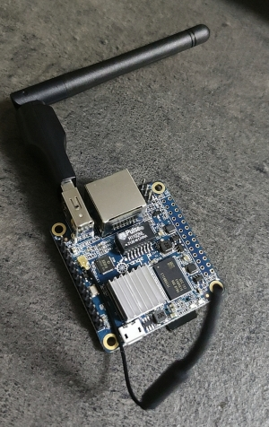
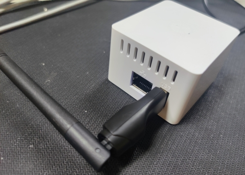

想从已有的一个WiFi热点搭建另一个NAT WiFi热点，首先想到的解决方案就是用树莓派hostapd搭建个低功耗的路由器。但是我树莓派丢在了老家当机顶盒，打开淘宝想买个新的被最近飞涨的价格吓到了，于是打算尝试国产山寨开发板Orange Pi
- 型号：Orange Pi Zero

用Orange Pi Zero内置WiFi网卡，以及额外的一个USB WiFi网卡来实现创建NAT WiFi子网。
安装Armbian
和树莓派烧录系统的流程一样，这里从Orange Pi官方网站上选择要安装的系统镜像下载，然后烧录到SD卡中。有Android，Ubuntu，Debian以及Armbian可选，据说Armbian比较稳定，于是选择下载Armbian。
完成后插入SD卡启动。Armbian提供的镜像默认开启了sshd服务，直接接上以太网SSH登录过去，初始用户root、密码1234。初次登录会有脚本引导修改密码、创建用户、设置shell和时区。
国内Armbian可以使用USTC的debian源：deb http://mirrors.ustc.edu.cn/debian buster main contrib non-free
deb http://mirrors.ustc.edu.cn/debian buster-updates main contrib non-free
deb http://mirrors.ustc.edu.cn/debian buster-backports main contrib non-free
deb http://mirrors.ustc.edu.cn/debian-security/ buster/updates main contrib non-free
ip link可以看到现在有四个网卡：
lo：本地loopbacketh0：以太网wlan0：内置WiFi网卡wlx38a28c92017a：USB WiFi网卡1: lo: <LOOPBACK,UP,LOWER_UP> mtu 65536 qdisc noqueue state UNKNOWN mode DEFAULT group default qlen 1000
link/loopback 00:00:00:00:00:00 brd 00:00:00:00:00:00
2: eth0: <NO-CARRIER,BROADCAST,MULTICAST,UP> mtu 1500 qdisc mq state DOWN mode DEFAULT group default qlen 1000
link/ether 02:81:14:8c:e3:dc brd ff:ff:ff:ff:ff:ff
3: wlan0: <BROADCAST,MULTICAST,UP,LOWER_UP> mtu 1500 qdisc mq state UP mode DORMANT group default qlen 1000
link/ether 3e:bb:30:9a:52:52 brd ff:ff:ff:ff:ff:ff
4: wlx38a28c92017a: <BROADCAST,MULTICAST,UP,LOWER_UP> mtu 1500 qdisc mq state UP mode DORMANT group default qlen 1000
link/ether 38:a2:8c:92:01:7a brd ff:ff:ff:ff:ff:ff
使用armbian-config可以进行系统配置（常用第三方包，配置host，配置网络）
开启AP
- 安装
hostapd和isc-dhcp-server：apt install hostapd isc-dhcp-server
systemctl disable isc-dhcp-server
systemctl stop isc-dhcp-server
systemctl disable hostapd
systemctl stop hostapdhostapd用于创建热点，isc-dhcp-server用于提供DHCP服务。
编辑/etc/hostapd.conf：#
# armbian hostapd configuration example
#
# nl80211 mode
#
ssid=Orange
interface=wlan0
hw_mode=g
channel=5
#bridge=br0
driver=nl80211
logger_syslog=0
logger_syslog_level=0
wmm_enabled=1
wpa=2
preamble=1
wpa_passphrase=123456
wpa_key_mgmt=WPA-PSK
wpa_pairwise=TKIP
rsn_pairwise=CCMP
auth_algs=1
macaddr_acl=0
# controlling enabled
ctrl_interface=/var/run/hostapd
ctrl_interface_group=0
注释掉bridge=br0，修改ssid和wpa_passphrase为SSID和密码。
编辑/etc/default/hostapd，将DAEMON_CONF=""取消注释，改为：DAEMON_CONF="/etc/hostapd/hostapd.conf"
修改/etc/dhcp/dhcpd.conf，末尾加上：subnet 192.168.100.0 netmask 255.255.255.0 {
range 192.168.100.2 192.168.100.254; # DHCP range
option domain-name-servers 223.5.5.5, 223.6.6.6; # Primary/Secondary DNS
option routers 192.168.100.1; # Router Addr
}
配置子网192.168.100.0/24，DHCP范围192.168/100.2 ～ 192.168/100.254，配置主/备DNS为阿里DNS，配置路由192.168.100.1
关闭
wlan0网卡。Orange Pi内置的网卡默认是wlan0，网卡不能同时用作WiFi接入网卡和AP网卡，在开启AP前需要先关闭wlan0，Armbian提供了网络管理工具nmcli，关闭网卡：nmcli dev disconnect wlan0。启动DHCP服务
isc-dhcp-server前需要将wlan0的IP绑定先前的路由地址192.168.100.1：ifconfig wlan0 192.168.100.1 netmask 255.255.255.0，然后启动DHCP：systemctl start isc-dhcp-server启动hostapd：
systemctl start hostapd。此时已经可以连上名称为Orange的热点了，只是要上网还需要开启IP转发。开启IP转发：
echo 1 > /proc/sys/net/ipv4/ip_forward
iptables -t nat -A POSTROUTING -o eth0 -j MASQUERADE
iptables -t nat -A POSTROUTING -o wlx38a28c92017a -j MASQUERADE其中
eth0是以太网卡，wlx38a28c92017a改成外置的USB网卡名。Orange Pi此时可以通过以太网接入互联网，也可以通过额外的USB WiFi网卡接入。用nmtui命令可以在TUI中配置WiFi连接。开机启动：
创建脚本/root/ap.sh：nmcli dev disconnect wlan0
ifconfig wlan0 192.168.100.1 netmask 255.255.255.0
rm -rf /var/run/dhcpd.pid
systemctl start isc-dhcp-server
systemctl start hostapd
echo 1 > /proc/sys/net/ipv4/ip_forward
iptables -t nat -A POSTROUTING -o eth0 -j MASQUERADE
iptables -t nat -A POSTROUTING -o wlx38a28c92017a -j MASQUERADE
在/etc/rc.local中添加启动执行：# enable AP
sh /root/ap.sh
使用体验
实际使用略有延迟，速度达到直连的80%。使用一小时候感觉到Orange Pi的发热明显比树莓派高出不少，建议配合风扇和散热片使用。
